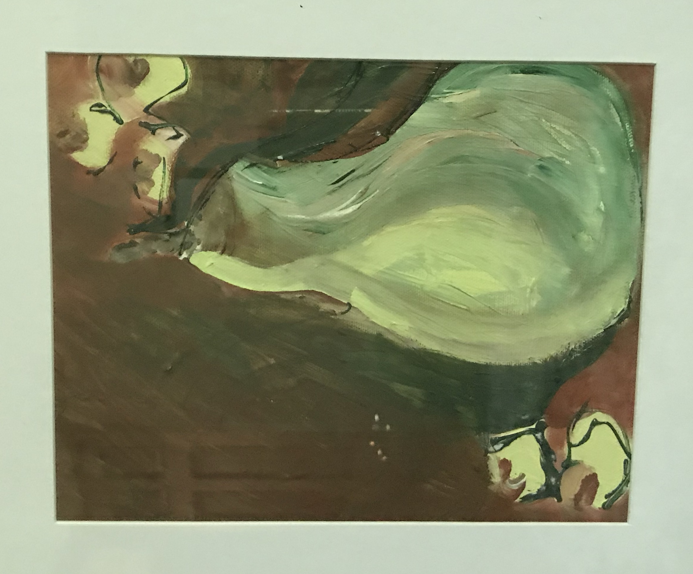

What Sparked My Art Journey?
I dedicate the spark for my art journey to my Grandma. Since I was a little girl, I found interest in molding play-doh,
creating dreamcatchers, and doing paint-by-numbers. I would not be the artist I am today without the molding of my Grandma's advice.
I grew up with her by my side telling me that, it's okay to draw outside of the lines
, it's okay to make a
mess on the table
, and it's okay to follow your creative intuition
. I even had my own designated craft drawer
in her house that we bonded through. Her artistic style followed abstraction; unrecognizable figures and dots
were her favorite.
Favorite Medium

My absolute favorite medium is oil paint. Ironically, my first time using oil paint was during an art class at MCC in 2019. I consider myself to be a messy artist; oil paint allows me to be messy by not having to clean my brush, and blending colors. It takes a few days for oil paint to dry, allowing the paint to be manipulated and blended easily. This is my 30" x 36" oil painting from the 2020 MCC Voices magazine of a close-up of an American Painted Lady Butterfly. The whole painting was done with the technique of dots.

Acrylic paint is my second favorite medium. Its ability to dry quick allows for layering different colors efficiently. Since it is a synthetic medium, the vibrancy is very apparent. This acrylic piece that I made is of Chance the Rapper. The process began with taking a snapshot from a music video of the group Donnie and the Trumpets. I then edited the exposure, highlights and saturation in the photo, which I used for my reference. I ultilized the color blocking technique to create the shadows and highlights on the figure.
Commissions

Alongside working, I do commissions on the side. These commissions have consisted of paintings, logos, t-shirt designs, and custom clothing. This particular commission I completed for a customer who wanted a documentation of his worldy travels. I transformed his photo from Budva, Montenegro into an oil painting. Its dimensions are 24"x 36", and is now happily hung on a wall in Utah. This painting took six months to fully complete.